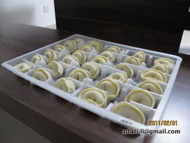

过年群发短信有个附带作用，一些人手机通讯录不备份，手机一丢，联系也丢。往往发短信过去，对方说正好把联系方式补上。

Ada李力
2011-02-02
Ada李力
2011-02-02
保存的最古老的手机号码是同学的，悲惨的是，今天发出去的两个给室友的短信，对方都回一句“你是谁？”，再解释一下，对方说：“发错了”。强烈谴责这些换号码不通知的同学。
Ada李力
2011-02-02
第一次在自己家尝试全手工做饺子，自己拌馅，自己和面，自己擀饺子皮。时间成本挺高的，光是包，三个人，200个饺子包了三个多小时，差不多一分钟一个饺子。明俊说以后不干这事儿了，太累。
- 